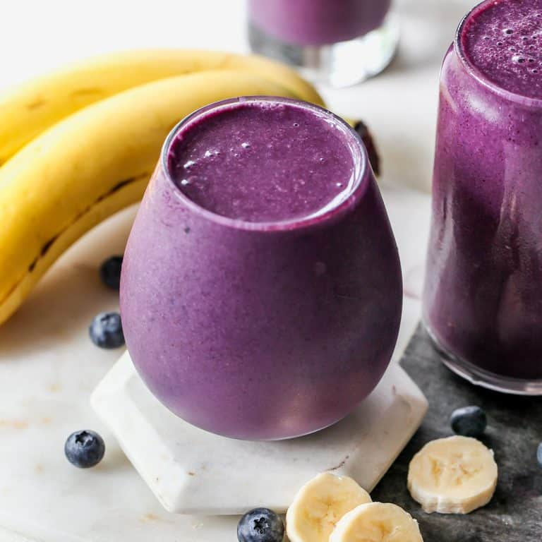

Blueberry Smoothie
Prep time:
5 mins
Yeild:
2
Ingredients
1/2 Cup blueberries
1 Banana
1/4 Cup milk
1/4 Cup yougurt
Method
Roughly chop the banana and orange quarters, and then add to a blender. Top with yogurt and water (or milk). Turn blender on and blend until creamy and smooth. Taste, and then adjust with honey if needed